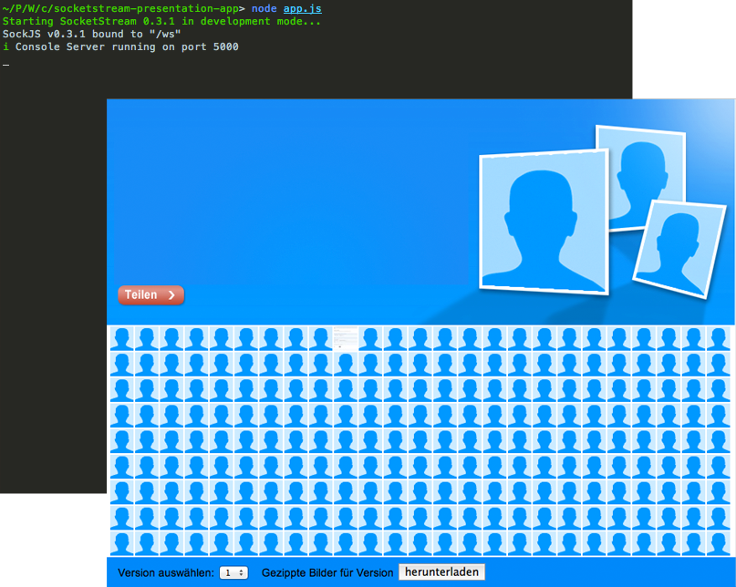

SocketStream & Node.js
for interactive single page apps
About me
- Lead developer at @ruhmesmeile
- HTML / CSS / JavaScript enthusiast
- Began using Node.js & Server-side
JavaScript about 1 1/2 years ago - Currently ~2-3 apps in production
- DJ & and music nerd in general
- Jonas Ulrich / @tsnmp
WebSockets
- Bi-directional, full-duplex communication
over single TCP connection - Best suited for live content and real-time games
- Initial handshake through HTTP Upgrade request
- Connection kept open
- No further HTTP-overhead per message
- Unsolicited server-to-client communication
Further information at the Mozilla Developer Network or the official RFCs.
SocketStream
Current version 0.31, MIT licensed
SocketStream is a modular Node.js web framework for building fast, responsive single-page realtime apps.
It provides the structure and basic building blocks you need to create rich social/chat apps, multiplayer games, trading platforms, sales dashboards, or any other kind of web app that needs to display realtime streaming data.
Twitter: @socketstream
Google Group: http://groups.google.com/group/socketstream
IRC channel: #socketstream on freenode
Created by Owen Barnes (GitHub)
Motivation
Why use it?
- Sane structure for client & server
- Sensible defaults (Think Rails convention
over configuration) - Live Reload while developing
- Asset packing and CDN support
- Modular client-side JavaScript
- Integrates well with popular client-side
frameworks (e.g. Backbone, Ember, Angular)
Features
Server
- Modular WebSocket transports (Socket.IO / SockJS)
- Shared code between client and server
- Request middleware support
- Scalable pub/sub built-in
- Authentication support (using Everyauth)
- Integrates with Connect 2.0 and Redis (optional)
Optional modules (officially maintained and supported):
ss-sockjs, ss-console, ss-coffee, ss-jade, ss-stylus, ss-less, ss-hogan, ss-coffeekup
Features
Client
- Use
require()andexportson the client - Package and minify all client-side assets
- Support for multiple client-side templating-engines
(Hogan/Mustache/CoffeeKup/jQuery/etc) - Optional code formatters
(CoffeeScript/Jade/Stylus/Less/etc) - Bundled with jQuery, but easily replaceable with Zepto or others
- Integrates well with other libraries, too (e.g. Underscore)
Demo

How to use it
code examples based on our app
socketstream new <name_of_your_project>cd <name_of_your_project>
[sudo] npm installnode app.jshttp://localhost:3000Server structure
- client/
-
server/
-
assets/ - general assets needed on the server
- images/
- fonts/
- data/
- ...
-
middleware/ - custom / additional middleware
- facebookAuth.js
- zipStream.js
-
rpc/ - RPC endpoints
- board.js
-
assets/ - general assets needed on the server
- app.js
Client structure
-
client/
-
code/ - client-side JavaScript code
- app/ - main client & entry point
- libs/ - legacy (read: non common.js) libraries
- system/ - system modules
- css/ - CSS files
- static/ - static assets
-
templates/ - templates in configured templating language
- fileupload.html
- userdetails.html
-
views/ - main views / layouts
- app.html
-
code/ - client-side JavaScript code
- server/
- app.js
Adding your modules
before starting the server in app.js
ss.session.store.use('redis', config.db);ss.publish.transport.use('redis');ss.client.templateEngine.use(require('ss-hogan'));ss.ws.transport.use(require('ss-sockjs'));bodyParser()):
ss.http.middleware.prepend(ss.http.connect.bodyParser());Defining Clients
// Define a single-page client called 'main'
ss.client.define('main', {
view: 'app.html',
css: ['app.css'],
code: ['libs/jquery.min.js', 'app', 'system'],
tmpl: '*'
});// Serve main client on the root URL
ss.http.route('/', function (req, res) {
res.serveClient('main');
});Starting the server
in app.js
// Start web server
var server = https.createServer(options, ss.http.middleware);
server.listen(443);
// Start SocketStream
ss.start(server);Bootstrap the client
in client/code/app/entry.js
// Make 'ss' available to all modules and the browser console
window.ss = require('socketstream');// Add handling for disconnect-events
ss.server.on('disconnect', function () {
console.log('connection is down');
});// Add handling for reconnect-events
ss.server.on('reconnect', function () {
console.log('connection is back up');
});// Initialize app when server signals ready
ss.server.on('ready', function () {
// Wait for DOM to load
jQuery(function () {
require('/app').init();
});
};Making RPC calls
from the client
client/code/app/app.js)
// Called from entry.js, single initialization point
exports.init = function () {
// Get current board from server
ss.rpc('board.current', initializeBoard);
};server/rpc/board.js)
// Actions accessible through client/rpc (e.g. 'board.current'
// where current is the action & board the controller)
exports.actions = function(req, res, socketstream) {
return {
current: function () {
res(null, calculatedResult);
},
// Calls can take arbitrary number of arguments
get: function (boardId) { ... }
}
}Broadcasting to Clients
from the server
server/rpc/board.js)
var notifyUsers = function (user, callback) {
// Publish a message to all connected clients
ss.publish.all('newUser', user);
};client/code/app/app.js)
ss.event.on('newUser', function (user) {
// Handle the new user
});// Register for channel boardUpdates
req.session.channel.subscribe('boardUpdates')
// Publish a message to that channel
ss.publish.channel('boardUpdates', 'update', user);
// Handle that message on the client
ss.event.on('update', function(user, channelName){ ... });Exposing modules to SS
app.js, before starting the server
// Add database connection to the SS.api
ss.api.add('db', client);
// Add enviroment const to the SS.api
ss.api.add('enviroment', env);server/rpc/board.js)
// Access the database
ss.db.get('boards:'+boardId+':positions:'+position,
function (err, userId) { ... }
);
// Or access the environment
if (ss.environment === "production") { ... }Session Management
Sessions can be shared between the initial HTTP-request and the WebSocket-connection. For every RPC-call that should load session-data the following has to be added:
// Add ss-session middleware, so we have access to the
// shared session (especially session.facebook,
// set during initial http-request)
exports.actions = function(req, res, socketstream) {
req.use('session');
return {
...
}
}Production gotchas
ulimitshould be increased to a
reasonable value on the server, to allow
a high number of concurrent connections-
For Internet Explorer support, a P3P-header has
to be included in the first response in order
for sessions to workss.http.route('/', function (req, res) { res.setHeader('P3P', 'CP="IDC DSP ..."'); res.serveClient('main'); }); - Heroku doesn't currently support WebSockets
SocketStream 0.4
Lessons learnt from 0.3 & built upon:Thanks
Any questions?
Slides were written using reveal.js
Global State
Set data-state="something" on a slide and "something"
will be added as a class to the document element when the slide is open. This lets you
apply broader style changes, like switching the background.
"blackout"
"soothe"
Custom Events
Additionally custom events can be triggered on a per slide basis by binding to the data-state name.
Reveal.addEventListener( 'customevent', function() {
console.log( '"customevent" has fired' );
} );
Clever Quotes
These guys come in two forms, inline:
The nice thing about standards is that there are so many to choose from
and block:
For years there has been a theory that millions of monkeys typing at random on millions of typewriters would reproduce the entire works of Shakespeare. The Internet has proven this theory to be untrue.
Pretty Code
function linkify( selector ) {
if( supports3DTransforms ) {
var nodes = document.querySelectorAll( selector );
for( var i = 0, len = nodes.length; i < len; i++ ) {
var node = nodes[i];
if( !node.className ) ) {
node.className += ' roll';
}
};
}
}
Courtesy of highlight.js.
Fragmented Views
Hit the next arrow...
... to step through ...
any type- of view
- fragments